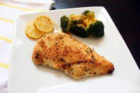

Grandma's Lemon Chicken

Description
Grandma's lemon chicken is a fast to cook recipe for any occassion which involves family. It's nice to have a recipe with the prefix as 'Grandma'.
It's a very healthy meal which contains 370kcal calories, 38.2g carbohydrates, 31.3g proteins, 6.7g saturated fat, 131.1mg cholestrol, 213mg sodium,
6.1g fiber and 2.4g sugar.
If you make it with the right methodoloy and nail the ratio of bitterness of the lemon and the saltiness of the chicken, I can guarantee that
Gordon Ramsay would offer you a job at his restaurant. The dish has a hint of nostalgia mixed with the modern flavor of healthy. Have fun if you're making this!
Ingredients
- Quarter cup of milk
- 1 large egg
- 1 cup all-purpose flour
- 1 teaspoon lemon-pepper seasoning
- 4 skinless, boneless chicken breast halves
- Half cup of milk
- One third stick unsalted butter
- 4 lemons, sliced
Steps
- Preheat the oven to 350 degrees F (175 degrees C).
- Whip milk and egg together in a small bowl. Mix flour and lemon-pepper seasoning together in a another small bowl.
- Dip chicken in the egg mixture and then in the flour to coat completely.
Place milk and butter in the bottom of a baking dish to keep the chicken nice and moist.
Place coated chicken on top. Place lemon slices directly on the chicken. Cover with foil.
- Bake in the preheated oven until almost cooked through, about 30 minutes.
Remove foil and continue to bake until no longer pink in the centers and juices run clear, about 15 minutes more.
An instant-read thermometer inserted into the center should read at least 165 degrees F (74 degrees C).
Return to home page